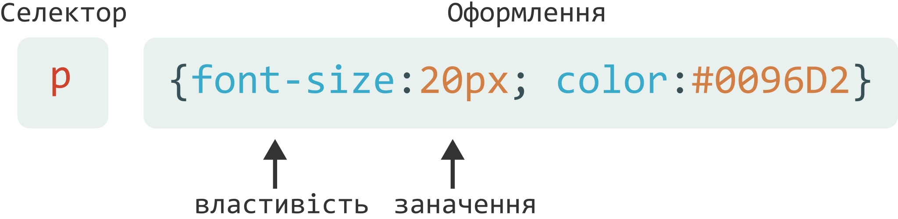
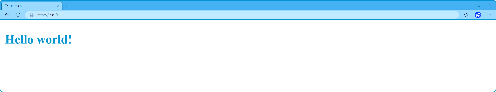
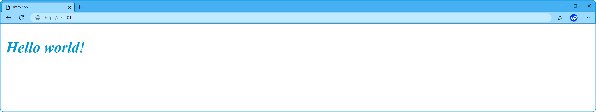

Введення в CSS
Cascading Style Sheets (каскадні таблиці стилів) – це мова, яка дозволяє надавати певні стилі оформлення структурованим документам.
Використовується для створення та зміни стилів елементів веб-сторінок та інтерфейсів користувача, що розмічені мовою HTML. Може задавати, як окремо відображатимуться HTML-елементи на екранах пристроїв, папері (при друку) та інших носіях.
Синтаксис CSS.
В каскадних таблицях стилів описуються правила форматування елементів, вони задаються певними властивостями та їх допустимими значеннями. Кожен елемент має обмежений набір властивостей, інші властивості не матимуть на нього жодного впливу.
CSS правила складаються з двох частин:
- селектор – вказує на елемент HTML, якому потрібно надати стиль;
- оформлення – це сукупність властивостей та значень, що розділені крапками з комою.

Використання стилів.
Здебільшого, таблиця стилів – це окремий документ, що являє собою текстовий файл із розширенням .css. В цьому випадку, CSS не пов'язаний з розміткою HTML, браузеру необхідно вказувати, звідки потрібно завантажувати стилі.
Зовнішня таблиця стилів підключається до веб-сторінки за допомогою елемента <link>, розташованого всередині розділу head.
<link rel="stylesheet" type="style.css" type="text/css">Розмістити стилі можна і безпосередньо в середині HTML-документа. Внутрішня таблиця стилів вбудовується в розділ head документа, а самі стилі визначаються всередині елемента <style>.
<head>
<style>
p {
font-weight:bold;
font-size:20px;
color:#0096D2;
}
</style>
</head>
<body>
<p>Hello world!</p>
</body>

Для застосування унікального стилю, до окремого елемента, треба використовувати вбудований стиль. Вбудовані стилі, пишемо безпосередньо всередині HTML-елемента за допомогою атрибуту style.
<p style="font-style:italic">Hello world!</p>